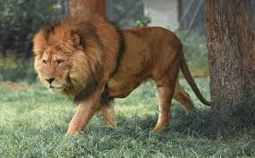
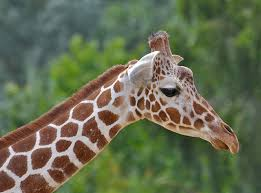
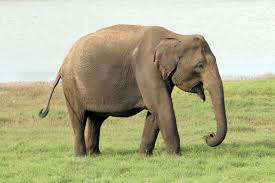

Zoológico, é um local específico para se manter animais selvagens que podem ser exibidos ao público.
A maior parte dos leões que hoje vive na natureza são encontrados nas savanas da África e demais regiões semi-desérticas.
As girafas são animais encontrados apenas no continente africano.
Os elefantes podem ser encontrados na África e na Ásia, ocupando diferentes habitats de acordo com a espécie analisada.
maioria dos macacos vivem em regiões tropicais, como florestas.